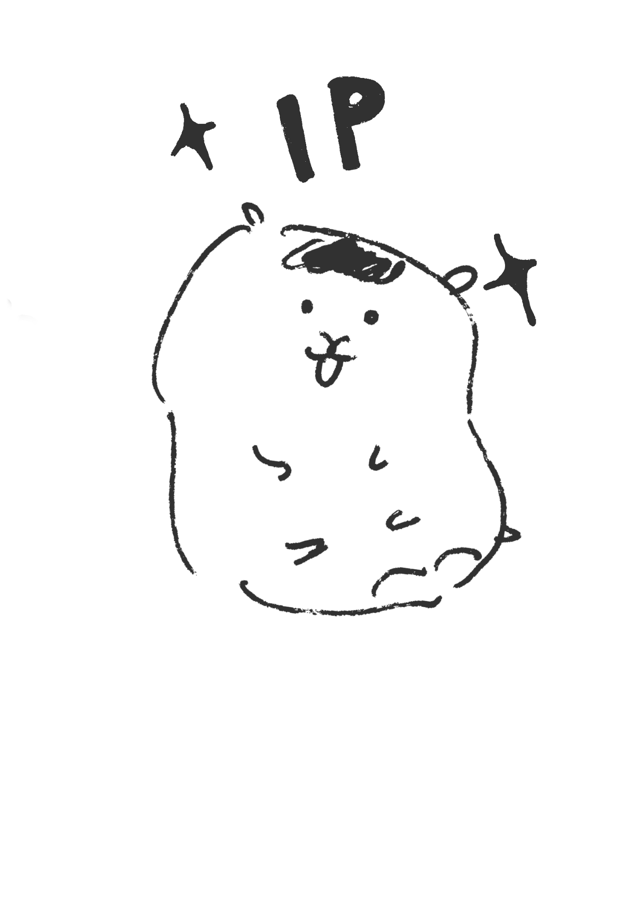
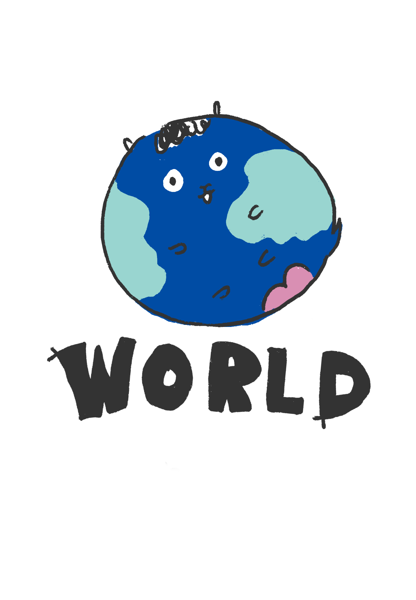
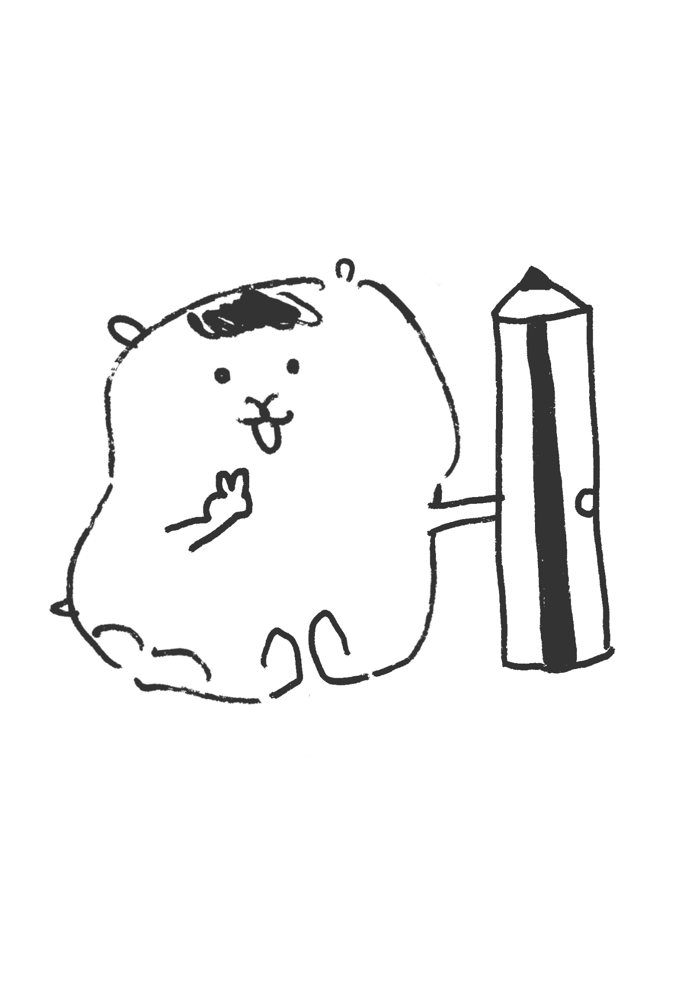

ILLUSTRATION / VISUAL DESIGN
Playful little worlds,
drawn with character.
Cute illustration, character design and visual storytelling from Taiwan.
See selected work ↓
Selected Works
CHARACTERS / STORIES / STUDIES
CHARACTER NOTES
Small ideas,
big personality.
Everyday moments, tiny jokes and expressive characters are where most of my ideas begin.

FROM THE SKETCHBOOK · LITTLE MOODS
A closer look.
COLOR / TEXTURE / PERSONALITYHELLO!
I’m Ting-Chen Su.
I create playful character illustrations and visual stories with a soft, humorous point of view.